CS 180 Project 1: Colorizing the Prokudin-Gorskii photo collection
By Shreyas Prasanna
The goal of this assignment is to take the digitized Prokudin-Gorskii glass plate images and, using image processing techniques, automatically produce a color image with as few visual artifacts as possible. There were two types of images - .jpg (smaller and simpler) and .tif (required image pyramid)
Single-Scale Alignment
The Green (G) and Red (R) channels are aligned to the Blue (B) channel by searching for the best displacement within a specified window (e.g., [-15, 15] pixels in both x and y directions). The search is exhaustive, meaning that every possible pixel shift in this window is tested.
Pyramid-Based Alignment
For larger images, exhaustive search can be computationally expensive. To mitigate this, a coarse-to-fine approach using an image pyramid is applied. The image is scaled down (rescaled by a factor of 2) to multiple levels, forming an image pyramid. Alignment starts at the coarsest level (smallest image), where the search space is much smaller. Once a good alignment is found at this level, the result is used as a starting point for finer levels, scaling up and refining the alignment progressively.
The displacement offsets found at each pyramid level are doubled for the next finer level to account for the scaling.
Issues Faced
- Had to make some changes to my system to accomidate the various libraries used
- Spent additional time on the pyramid, using Euclidean Distance
- Before using the L2 Norm, I had tried using NCC
Results
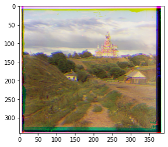
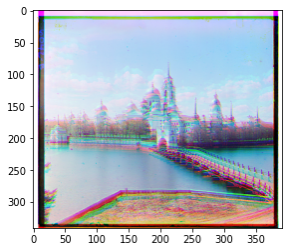
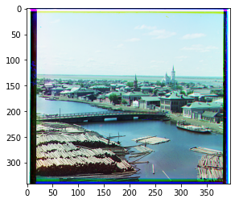
Offsets
- Cathedral: (-1, 1) ; (-1, 7)
- Monastery: (0, -6) ; (1, 9)
- Tobalsk: (2,3) ; (3,6)
Results
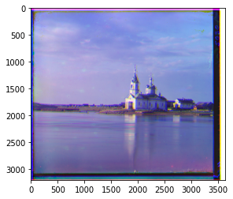
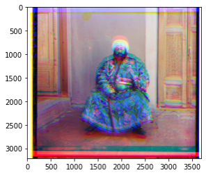
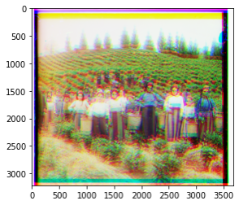
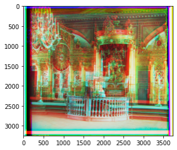
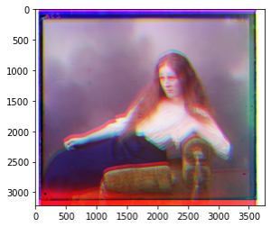
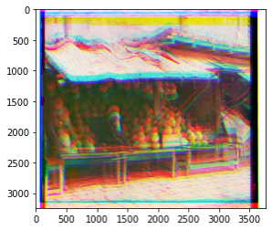
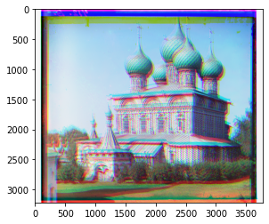
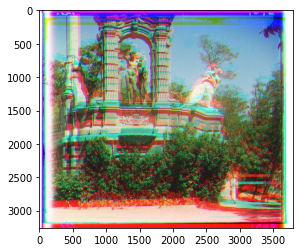
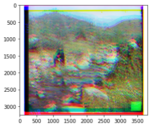
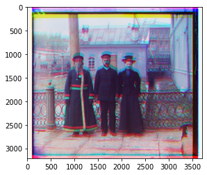
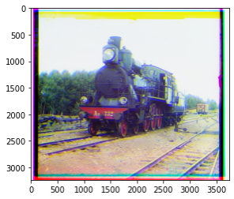
Offsets
- Church: Offsets: (-5, 0) ; (-13, 15) and Pyramid Offsets: (-27, 0) ; (-39, 41)
- Emir: Offsets: (7, -3) ; (15, -15) and Pyramid offsets: (33, -11) ; (41, -41)
- Harvesters: Offsets: (-3, 15) ; (-2, 15) and Pyramid offsets: (-23, 41) ; (-14, 41)
- Icon: Offsets: (15, 15) ; (-7, 15) and Pyramid offsets: (15, 41) ; (-33, 41)
- Lady: Offsets: (-8, 15); (-15, 15) and Pyramid Offsets: (-34, 41) ; (-41, 41)
- Melons: Offsets: (-4, 15); (-8, 15) and Pyramid offsets: (-24, 41); (-34, 41)
- Onion Church: Offsets: (0, 15) ; (-1, 15) and Pyramid offsets: (0, 41) ; (-7, 41)
- Sculpture: Offsets: (-10, 15) ; (-2, 15) and Pyramid offsets: (-36, 41); (-14, 41)
- Self Portrait: Offsets: (-3, 15) ; (-6, 15) and Pyramid offsets: (-21, 41) ; (-30, 41)
- Three Generations: Offsets: (1, 15) ; (3, 15) and Pyramid offsets: (7, 41) ; (19, 41)
- Train: Offsets: (-6, 0) ; (-1,15) and (-30, 0) ; (-7, 41)